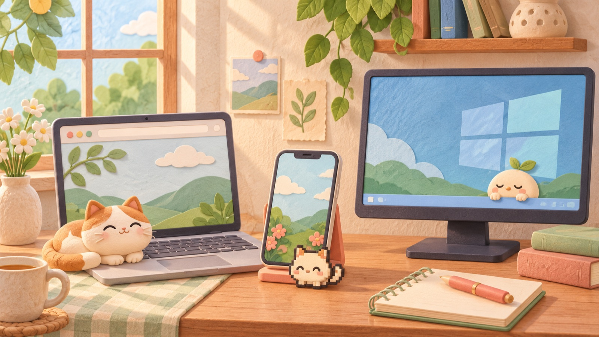
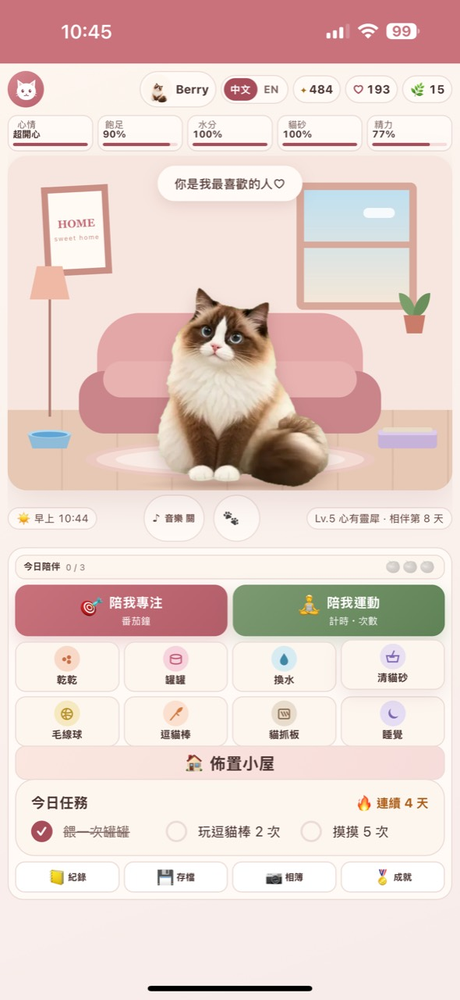
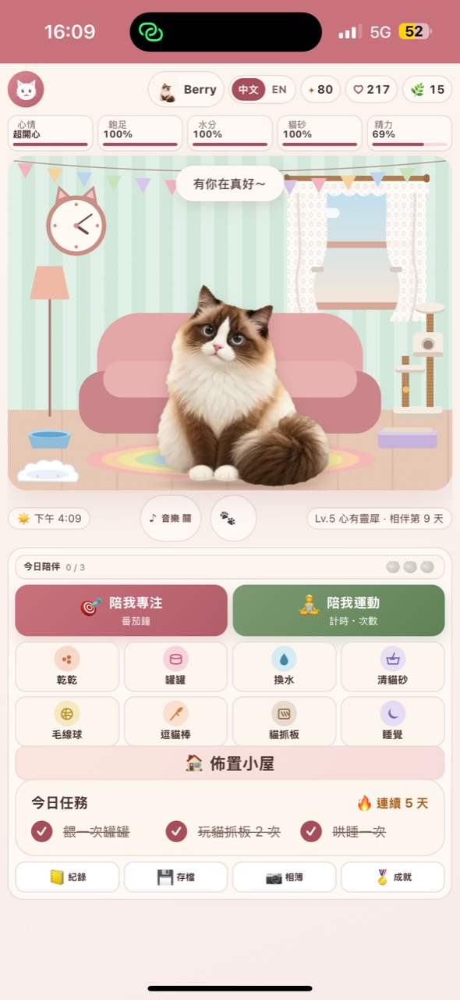
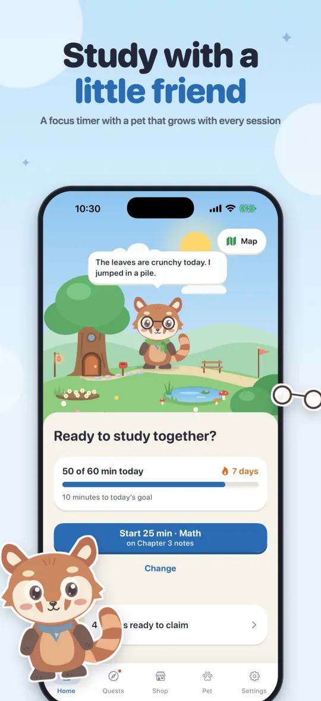
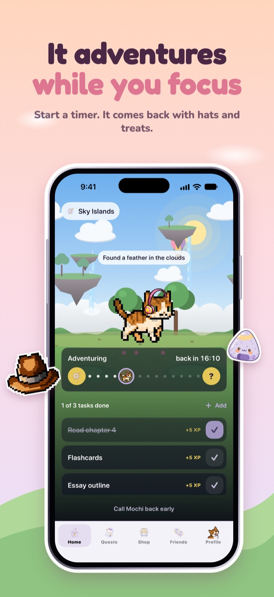
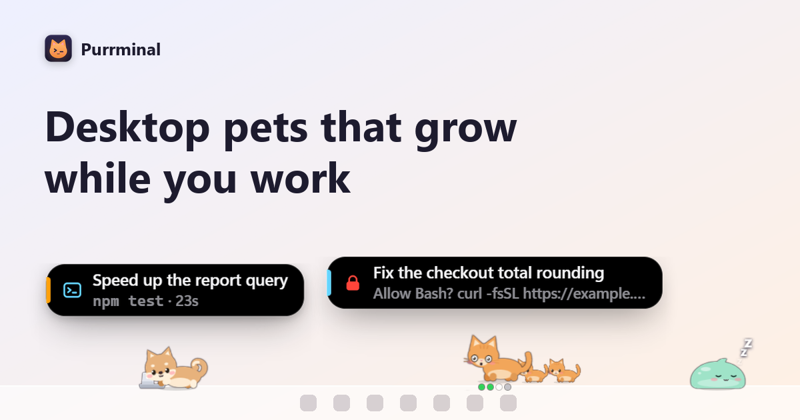
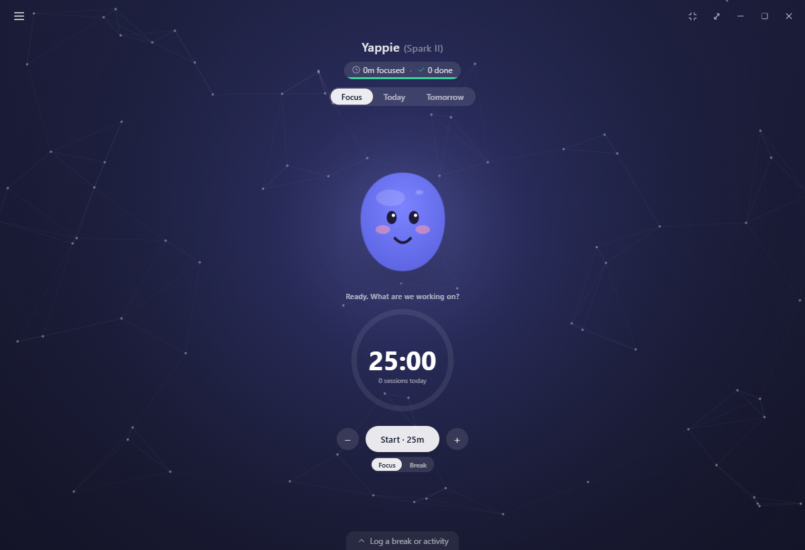
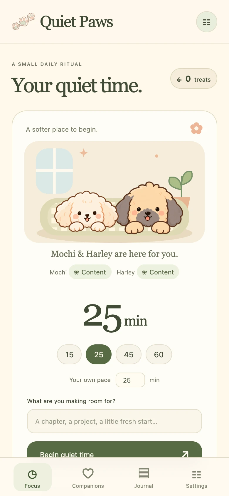

7 款虛擬寵物專注 App，哪一隻適合陪你工作？
有人要的是手機鎖屏上的小動物，有人只想打開瀏覽器就開始，還有人希望寵物住在 Windows 工作列。把平台、價格、寵物玩法和資料方式放在一起看，答案比「哪款最好」實際得多。
把這些工具排在同一張表裡後，我先刪掉了「總分」。一個只有 iPhone 的 App，就算鎖屏計時做得再好，對 Android 使用者仍然是零分；一個資料留在瀏覽器裡的工具，對重視免註冊的人是優點，對需要跨裝置的人卻可能是麻煩。
這裡不設唯一冠軍。我們看五件事：在哪裡能用、免費範圍、寵物會不會帶來壓力、是否需要帳號，以及專注記錄放在哪裡。
先看結論
- 想在瀏覽器直接開始，又想一起記錄專注與運動：選 Play.formecore.com。
- 用 iPhone 讀書，希望鎖屏計時和封鎖分心 App：看 Nela。
- 需要 iPhone、Android 都能用，還想要待辦、單字卡和成熟的養成系統：看 Study Bunny。
- 想要接近電子雞的照顧感，或把自己的貓狗變成像素寵物：看 Boko。
- 希望寵物常駐 Windows 工作列：選 Purrminal。
- 重視任務、統計、共學和跨裝置同步：看 Yappie。
- 喜歡狗狗陪伴，討厭斷掉連續天數後被懲罰：試 Quiet Paws。
七款工具放在一起比較
| 產品 | 平台 | 免費與價格 | 最有辨識度的功能 | 適合誰 | 先知道的限制 |
|---|---|---|---|---|---|
| Play.formecore.com | 瀏覽器免帳號 | 免費 | 專注、運動、照顧 Berry 和佈置小屋都在同一個世界 | 想打開網頁就開始，不想安裝 App 的人 | 進度留在目前瀏覽器，不會自動跨裝置同步 |
| Nela | iPhone免帳號可用 | 核心功能免費；Plus US$3.99/月或 US$19.99/年，7 天試用 | 鎖屏與 Dynamic Island 計時，可選擇封鎖分心 App | 以讀書為主的 iPhone 使用者 | 目前沒有 Android 或 iPad 版 |
| Study Bunny | iPhoneAndroid | 免費下載，含廣告與 App 內購買；價格依商店與地區 | 計時、待辦、單字卡、統計和房間佈置都很完整 | 想要成熟學習工具，也願意花時間養兔子的人 | 免費版有廣告；部分裝飾與貨幣需購買 |
| Boko | iPhoneiPadiOS 17+ | 免費下載、無廣告；Premium 為選購訂閱，當地價格見 App Store | 寵物住在 Dynamic Island，也能把真實寵物照片變成像素角色 | 喜歡電子雞式照顧、迷你遊戲和朋友互動的人 | 飢餓與心情會隨時間下降，不適合討厭照顧壓力的人 |
| Purrminal | Windows 10/11 | 免費；Premium US$3.99/月或 US$29.99/年，3 天試用 | 寵物常駐工作列，專注時睡覺；也能顯示部分程式開發代理狀態 | 長時間在 Windows 電腦工作的學生、創作者與開發者 | 沒有 Mac 版；Premium 授權限一台電腦 |
| Yappie | WindowsmacOS | 免費；Lite €2.49/月（年繳），Super €4.99/月（年繳）起 | 任務、圖表、休息日、朋友共學與雲端同步整合得最完整 | 想把專注工具當成日常工作系統的人 | 手機 App 尚未推出；Free 與 Lite 同時只能登入一台裝置 |
| Quiet Paws | 瀏覽器 PWA免帳號 | 目前免費，付費升級尚未開放；官網列的是規劃價格 | 兩隻狗狗各有照顧狀態，但不會生病或死亡；首次載入後可離線 | 想要柔和陪伴、手動備份和低壓力設計的人 | 原生 iPhone App 與付費方案仍在規劃中 |

每一款實際適合什麼人
每款下方有三項快速評分：上手速度、專注工具和寵物養成。它們是依 2026 年 11 月 8 日官方公開功能做的使用情境判斷，不是實驗室品質分數。1 分代表功能很少或不適用，5 分代表這是產品的明顯強項。
1. Play.formecore.com：免下載，把專注和運動放進同一間小屋


打開 Play.formecore.com 就能開始。選 25/5、50/10、15/3 或自訂時間，不必安裝，也不必先交出信箱。完成一次專注或運動後，Berry 會帶小禮物回來，陪伴點數、寶物和回憶也會慢慢留在這間小屋裡。
除了計時，你還可以用倒數、計時或手動次數記錄運動，再回來餵食、摸摸或陪 Berry 玩。小屋也能自己佈置，牆紙、窗簾、掛鐘、地毯和貓跳台會讓每次回來多一點變化。專注、活動紀錄和養成在同一頁，少切換一個 App，用起來更順手。
如果你曾因為斷掉一天就不想再打開習慣 App，Play.formecore.com 的設計會比較輕鬆。漏掉一天、提早結束，或沒有完成每日任務，都不會拿走已經得到的進度，也不會讓 Berry 生病。
它的不足也和這種輕量設計綁在一起：資料目前存在瀏覽器裡。換電腦、換瀏覽器，進度不會自己跟過去，需要手動備份與還原。手機鎖屏後，瀏覽器的背景限制也可能讓提示音延遲。
價格：免費。
Play.formecore.com 快速評分
- 上手速度5/5
- 專注工具4/5
- 寵物養成4/5
Berry 會帶回小禮物，也能照顧牠和佈置小屋；跨裝置與社交仍是缺口。
2. Nela

Nela 把讀書場景做得很細。你可以選番茄鐘、一般倒數或碼表，綁定科目和待辦，鎖屏後仍能在 Lock Screen 與 Dynamic Island 看進度。需要更硬一點的邊界時，還能借用 Apple 的 Screen Time 封鎖指定 App。
免費版已含寵物、計時、封鎖、待辦、每週統計和四組例行安排。Plus 主要增加完整歷史、更多環境音與例行安排。它目前只做 iPhone，這個限制很乾脆。
價格：免費；Plus 為 US$3.99/月或 US$19.99/年，先試用 7 天。App Store 會顯示所在地價格。
Nela 快速評分
- 上手速度4/5
- 專注工具5/5
- 寵物養成4/5
iPhone 上的專注流程很完整，社交與跨平台不是它的方向。
3. Study Bunny
Study Bunny 已經不是只有一隻兔子坐在計時器旁。它有待辦、單字卡、可自訂的學習追蹤、音樂、商店和大量房間物件。Google Play 顯示下載量超過 500 萬次，這也是七款裡使用規模最成熟的一款。
代價是介面和獎勵系統比較多，免費版也含廣告。若你只想要一個安靜倒數，它可能顯得太忙；如果你會因為買下一張地毯或替兔子換衣服而願意再讀 20 分鐘，這套循環很容易懂。
價格：免費下載，含廣告及 App 內購買；項目與價格依地區商店頁為準。
Study Bunny 快速評分
- 上手速度4/5
- 專注工具5/5
- 寵物養成5/5
學習和養成內容最成熟，廣告與連續天數會讓部分使用者有壓力。
4. Boko

Boko 的寵物會待在 Dynamic Island、鎖屏和小工具裡。專注任務可設 5 到 120 分鐘，完成後帶回經驗值、月亮和帽子。你可以從 36 種寵物挑一隻，也能把家裡的貓狗照片做成像素寵物。
它最像真正的電子雞：要餵食、摸摸、玩遊戲，飢餓和心情會在你離開時下降。有人會因此更想回來，也有人會覺得多了一份差事。選 Boko 前，先想想自己要的是陪伴，還是照顧。
價格：免費下載、無廣告；Premium 解鎖額外世界、寵物和裝飾，價格由所在地 App Store 顯示。
Boko 快速評分
- 上手速度4/5
- 專注工具3/5
- 寵物養成5/5
電子雞感和朋友互動突出，照顧需求也比較明顯。
5. Purrminal

Purrminal 的 16 隻寵物住在 Windows 工作列。開始專注後，選中的寵物會在進度圈裡睡覺；休息時間再醒來。免費版包括計時、每日任務、連續天數和全部可賺取的寵物。
它還有一個少見的旁支：Claude Code、OpenCode 或 Pi 的工作狀態也能變成桌面寵物。這對一般使用者不是必要功能，卻讓它和其他計時器拉開了距離。官方目前只提供 Windows 10 與 11 版本。
價格：免費；Premium 為 US$3.99/月或 US$29.99/年，可試用 3 天。
Purrminal 快速評分
- 上手速度4/5
- 專注工具4/5
- 寵物養成5/5
Windows 桌面存在感很強，能使用的平台則很少。
6. Yappie

Yappie 比較像一套完整的桌面工作系統。計時器旁有一隻會回應你的軟團子，背後則放了任務拆解、專案和標籤、圖表、成就、休息日、朋友、陌生人共學與讀書群組。免費方案沒有把核心專注功能鎖起來，雲端同步也包含在內。
它目前有 Windows 和 macOS 版，iOS 與 Android 還在開發。免費與 Lite 方案一次只允許一台裝置登入，Super 提高到三台。若你只想倒數 25 分鐘，Yappie 可能太大；需要整理一整週的工作，它的資料層就有用。
價格：免費；Lite 年繳折算 €2.49/月，Super 年繳折算 €4.99/月；月繳分別為 €2.99 與 €5.99。
Yappie 快速評分
- 上手速度3/5
- 專注工具5/5
- 寵物養成4/5
功能涵蓋最廣，第一次打開時也要花較多時間理解。
7. Quiet Paws

Quiet Paws 在瀏覽器裡養兩隻狗。牠們有飲水、清潔、精力等狀態，但不會生病、變老或死亡。專注提早結束也會保留已投入的時間。第一次載入完成後，計時、日誌和照顧功能可離線運作。
目前所有付費工具與房間都是免費預覽，付款功能尚未開放。官網雖列出未來方案和價格，那些是規劃，不是現在能買的商品。原生 iPhone App 也仍在計畫中。現在使用它，最好把它當成一個持續開發中的 PWA。
價格：目前免費，無需付款卡；未來升級價格尚未正式啟售。
Quiet Paws 快速評分
- 上手速度5/5
- 專注工具4/5
- 寵物養成4/5
瀏覽器體驗溫和而完整，社交和正式跨裝置服務仍未成形。
怎麼選，才不會下載兩天就忘了
先看你每天真的會打開哪一個裝置。手機使用者再分成兩類：想把手機放下，Nela 的鎖屏計時和封鎖功能比較順；想在手機裡養一隻有生活感的寵物，Boko 或 Study Bunny 更接近遊戲。
長時間坐在電腦前，Purrminal 和 Yappie 的存在感更自然。前者像工作列上的小玩具，後者比較像帶寵物的任務系統。你若常換電腦，Yappie 的同步會省事；只用一台 Windows 電腦，Purrminal 的本機保存反而簡單。
不想安裝，也不想先註冊，Play.formecore.com 和 Quiet Paws 都能直接在瀏覽器開始。Play.formecore.com 多了運動記錄，Quiet Paws 的狗狗照顧和離線 PWA 更完整。兩者都要留意備份，因為「資料留在本機」也表示換裝置時得自己搬。
常見問題
免費的虛擬寵物專注 App 怎麼選？
想直接在瀏覽器使用，可先看 Play.formecore.com 或 Quiet Paws；用 iPhone 讀書可看 Nela；Android 與 iPhone 都要支援，可看 Study Bunny。這幾款都能免費開始，但廣告、付費裝飾和備份方式不同。
哪一款不用註冊帳號？
Play.formecore.com、Nela、Quiet Paws 與 Yappie 都允許先不註冊。Nela 登入後可備份並把進度帶到新 iPhone；Quiet Paws 提供本機匯出與手動雲端備份；Yappie 要開啟跨裝置同步才需要帳號；Play.formecore.com 目前以瀏覽器本機資料和手動備份為主。
哪一款最適合不喜歡連續天數壓力的人？
Play.formecore.com、Nela 和 Quiet Paws 都明確避免因中斷而拿走既有進度。Boko 的寵物需求會隨時間下降，Study Bunny 與 Purrminal 則把連續天數放進養成循環。若你曾因為斷掉一天就放棄，先從前三款試。
Windows 桌面上有虛擬寵物專注工具嗎？
Purrminal 專為 Windows 10 與 11 設計，寵物會待在工作列；Yappie 也有 Windows 版，並提供 macOS 版。前者更像桌面寵物，後者的任務、統計和共學功能較多。
資料來源與價格說明
功能、價格與官方產品畫面核對日期為 2026 年 11 月 8 日。幣別沿用產品官方標示；App Store 與 Google Play 會按地區顯示不同價格與稅項。每個產品段落內的圖片來自產品官網、官方商店或 FORMECORE 目前版本；段落之間的插圖是原創情境圖。
- Play.formecore.com 官方網站與 FORMECORE 產品資料。
- Nela 官網：平台、免費方案、Plus 價格、帳號與鎖屏功能。
- Study Bunny Google Play及 App Store：平台、廣告、下載量與內購。
- Boko 官網：iOS 版本、Dynamic Island、寵物與 Premium 範圍。
- Purrminal 官網：Windows 支援、免費方案與 Premium 價格。
- Yappie 官網、下載頁與方案說明。
- Quiet Paws 官網：PWA、免帳號、離線功能與尚未開放的規劃價格。
想先從免安裝的開始？
Play.formecore.com 在瀏覽器裡把專注、運動和貓咪 Berry 放在一起。免費使用，不用註冊。進度目前保存在你的瀏覽器，換裝置前記得手動備份。
打開 Play.formecore.com，開始一段專注